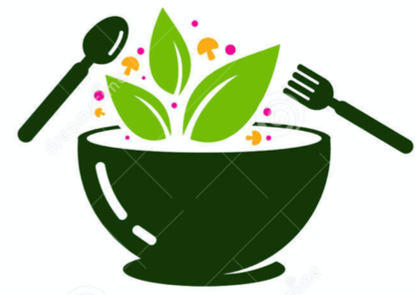

A guide to environmental sustainability
Felicity and Sophie are students from the University of Bristol. They
are particularly interested in simple, easy and yet effective solutions to climate change.
This website was created to offer fellow students sustainable solutions to everyday activities, which
can be easily carried out and yet will make a massive difference.
The website focuses on two main areas: food and energy efficiency in the house. Click on the icons
to discover more!

Learn how to buy food from more sustainable sources and choose options with a lower carbon output!

Learn how to reduce the carbon output from your house and reduce energy costs!
Learn how to buy food from more sustainable sources and choose options with a lower carbon output!
Learn how to reduce the carbon output from your house and reduce energy costs!